Lab 6 — Firebase & RFID: Connecting the Car to the Cloud (Student Guide)
Adapted from HKUST ISDN 2602 (Fall 2025) Laboratory 6 for secondary school students.
Original course info — GitHub Classroom: https://classroom.github.com/a/NqRJUakP
1. Overview and Learning Outcomes
This laboratory adds two capabilities to the robot car: communication with the cloud and touchless identification of objects. By the end you will be able to:
- Explain what a cloud database is and how it lets devices exchange data
- Set up a free Firebase project (Google's application platform)
- Read and write data between the ESP32 and Firebase in real time
- Use an RFID reader to identify RFID tags — the same technology used by Hong Kong's Octopus card
Key words: cloud · database · real-time · Firebase · JSON · API key · authentication · UID · RFID · tag · reader
2. Background — The Cloud, Firebase, and RFID
2.1 What Is "the Cloud"?
The cloud refers to powerful computers in data centres that store data and run services, connected through the internet. When a saved photo appears on all of a user's devices, or when two people edit the same document simultaneously, the cloud is at work.
A robot car uses it as follows. In the final project, an application or website determines the car's mission (start point, end point, whether the examination has started), and the car must receive that information immediately. When both the application and the car communicate with one shared database in the cloud, a value changed in the application appears on the car at once, with no direct connection — the same mechanism by which two people edit a shared online document simultaneously.
2.2 What Is Firebase?
Firebase is Google's platform for building applications. It provides a set of services — a real-time database, authentication, hosting, and more. This lab uses the Realtime Database:
- It is a NoSQL database that stores all data as one large JSON tree (see §2.3)
- Real-time synchronization: the moment one client changes the data, every other connected client is updated — well suited to the car ↔ application link
- Free for small projects such as this one
Firebase is popular for personal IoT projects because of its simplified setup (no server to build), real-time synchronization, built-in authentication, serverless operation (Google runs the servers), and cross-platform support.

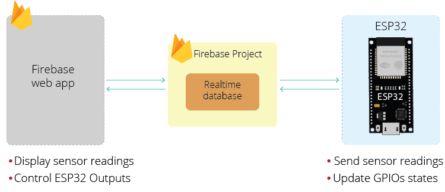
How the ESP32 talks to Firebase's Realtime Database (source: https://randomnerdtutorials.com/esp32-firebase-realtime-database/)2.3 A Brief Introduction to JSON
JSON (JavaScript Object Notation) is the standard data format of the internet — a simple way to write labelled information, similar to an identity card:
{
"name": "Smart Car",
"task_id": 7,
"is_started": false
}Curly braces hold an object; each line is a "key": value pair. Values can be text (in quotes), numbers, true/false, or nested objects. Firebase stores the whole database as one JSON tree — one is imported in Task 1.
2.4 API Keys, Users, and UIDs
To keep unauthorized clients out of the database, Firebase uses authentication — verifying the identity of each client. This lab requires three credentials (store them securely; they are entered into the code):
- Web API Key — identifies the Firebase project and authorizes access
- Database URL — the internet address of the database (
https://…firebasedatabase.app) - User UID — a random ID string Firebase assigns to each user account (each student's data is stored under their own UID, so no one overwrites anyone else)
2.5 What Is RFID?
Radio-Frequency Identification (RFID) lets a small reader identify a tag using radio waves — with no contact, and with no battery in the tag for passive tags (the reader's radio field briefly powers the tag, and the tag replies with its stored ID). Common applications:
- The Octopus card and other contactless payment cards
- Library book tags
- School and office access cards
An RFID system has two parts: tags (each stores a unique ID) and a reader (sends radio signals; a nearby tag transmits its stored information back).
In the final project, RFID tags are placed along the road, and an RFID reader at the bottom of the car scans them as the car drives over. By reading a tag, the car knows its exact location — in the same way that tapping an Octopus card identifies the entry station.
3. Prelab — Setting Up the Firebase Project
Complete the prelab on a laptop with the Chrome browser. A Firebase project is created and the three credentials are collected; the car is not required.
Step 1 — Install the Arduino Libraries
Two libraries must be installed with the correct versions:
- FirebaseClient ≥ 2.2
- ArduinoJson ≥ 7.4
In the Arduino IDE, open Sketch → Include Library → Manage Libraries…, search for each name, select the version, and click Install.
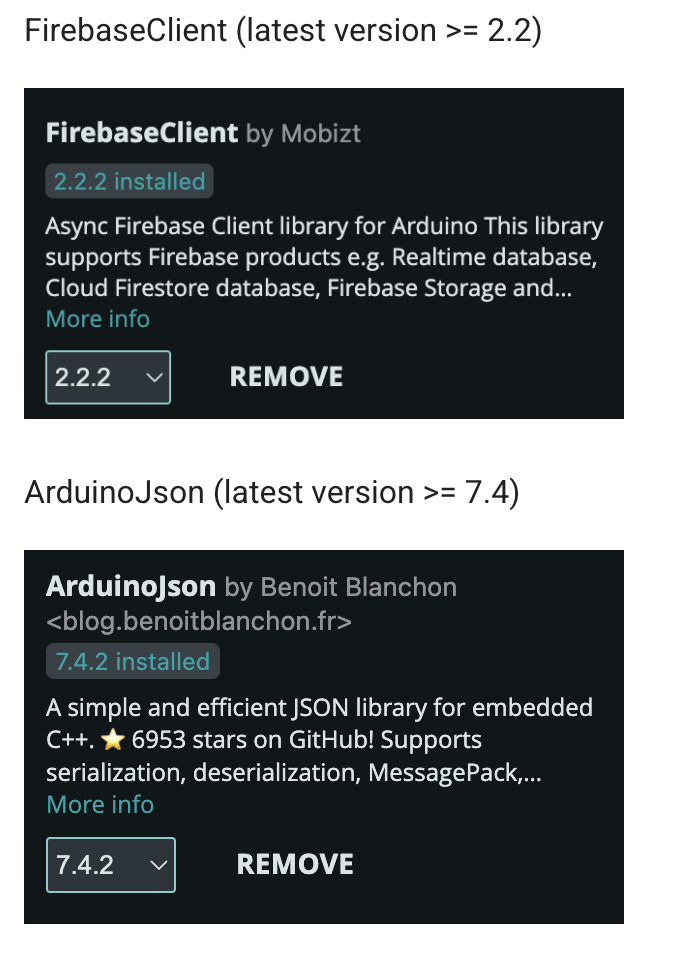
Install FirebaseClient (≥ 2.2) and ArduinoJson (≥ 7.4)Step 2 — Create a Firebase Account and Project
1. Visit https://firebase.google.com and sign in with a Google account:
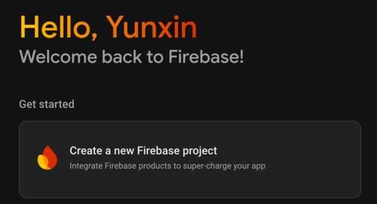
Sign in at firebase.google.com2. Click Get Started, then press Add Project to create the project, and give it a name:
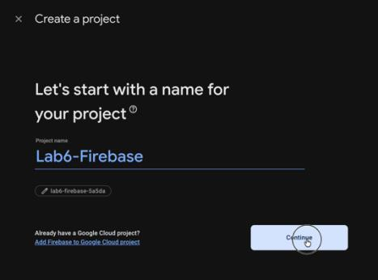
Create the project and set a name3. It is acceptable to leave Google Gemini and Google Analytics disabled — click Continue:
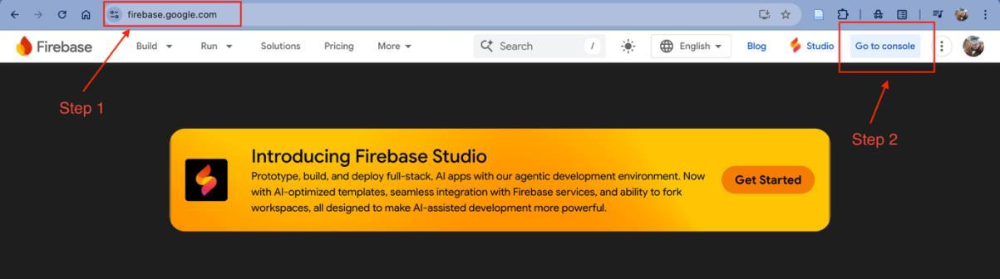
Disabling Gemini / Analytics is fine for this lab4. Wait for the project to be ready — the project overview page opens:
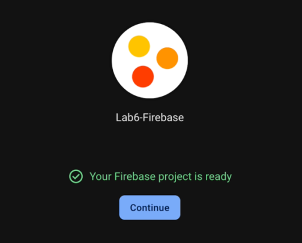
The project overview page5. Under Product categories → Build, enable Authentication and Realtime Database. After selecting them one by one, they appear under Project shortcuts:
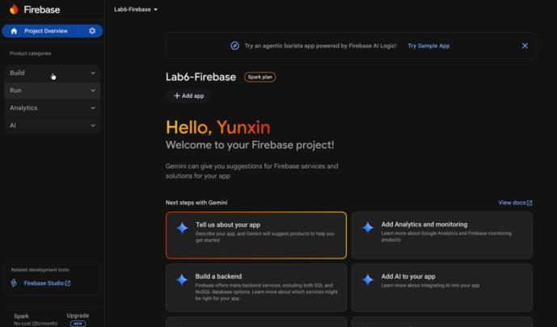
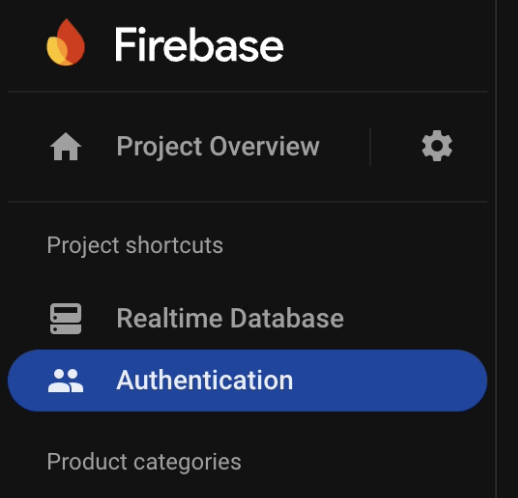
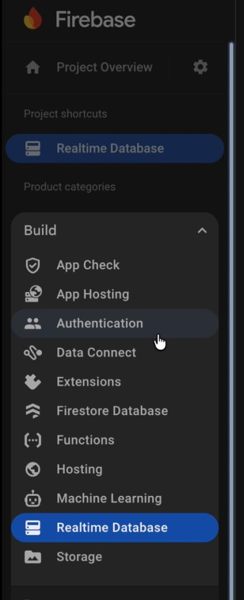
Enable Authentication and Realtime Database under BuildStep 3 — Set Up the Realtime Database
1. Click the Realtime Database shortcut, then Create Database:
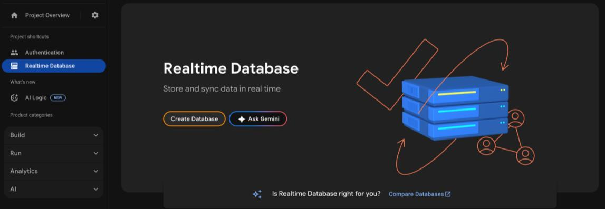
Realtime Database → Create Database2. Set the configuration:
- Location: keep the default United States (us-central1)
- Security rules: choose Start in test mode (for now)
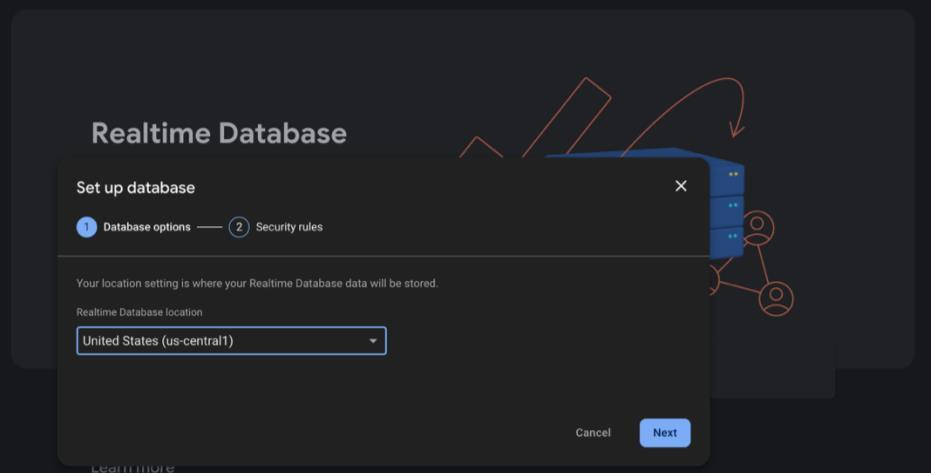
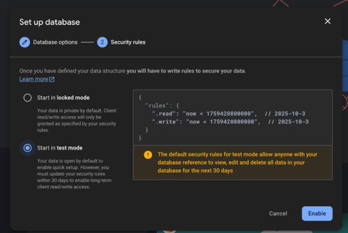
Location: us-central1 · Security rules: test mode3. The database is created. Click the link icon to copy the database URL:
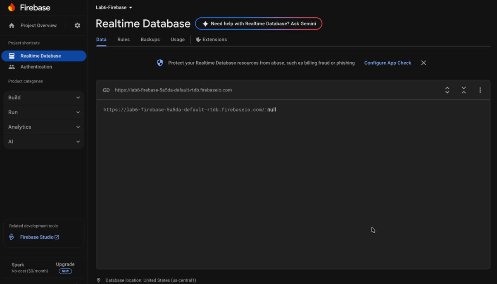
Copy the database URL with the link iconRecord the Database URL — it is pasted into the code at TODO 1.
Step 4 — Get the Project API Key
The ESP32 needs the API Key to prove to Firebase which project it belongs to.
1. Click the gear icon next to Project Overview, then Project settings:
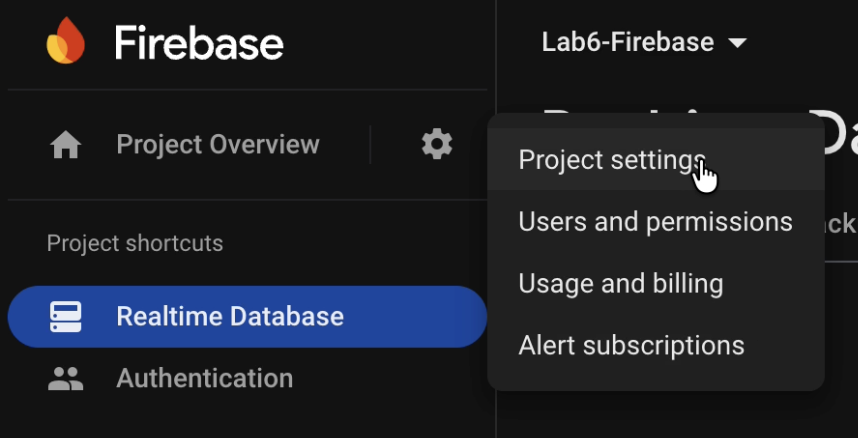
Gear icon → Project settings2. Find and copy the Web API Key:
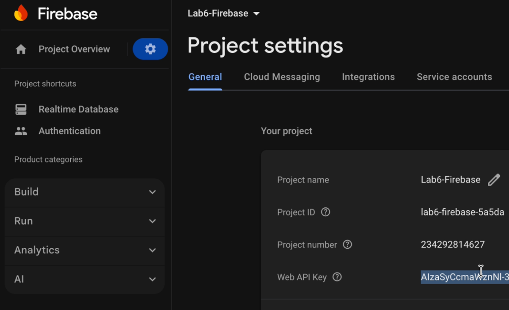
Copy the Web API key3. (If it is not shown there) visit https://console.cloud.google.com/apis/, sign in again if needed, select the Firebase project, open the Credentials tab, and click Show key:
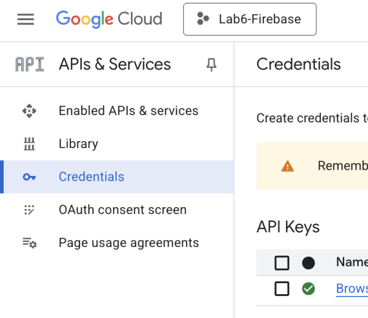
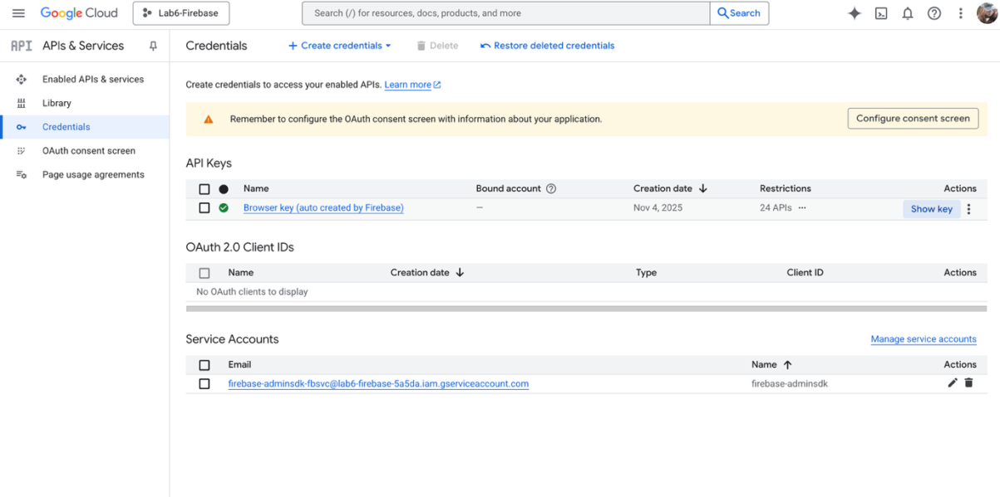
Alternative route: Google Cloud console → Credentials → Show keyRecord the Web API Key — also TODO 1.
Step 5 — Set Up Authentication
1. Go to Authentication and click Get started. In the Sign-in method tab, choose Email/Password:
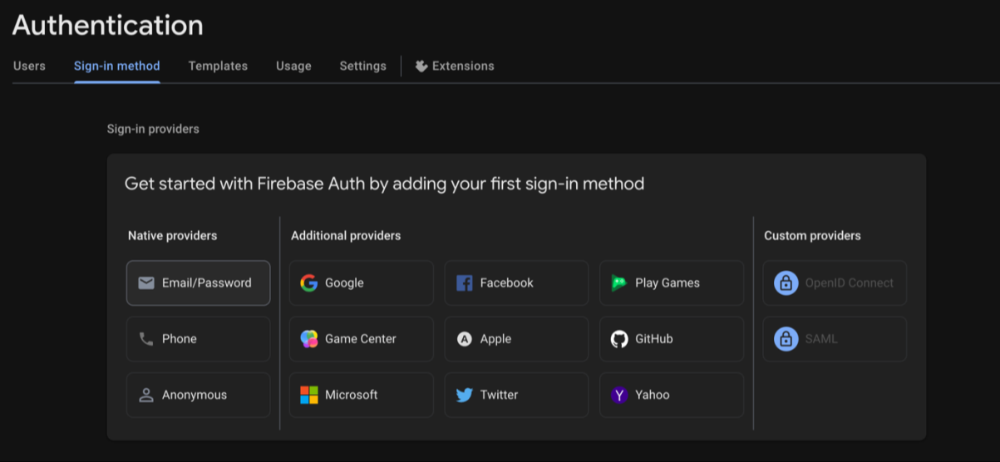
Authentication → Get started → Email/Password2. Toggle Email/Password ON and press Save:
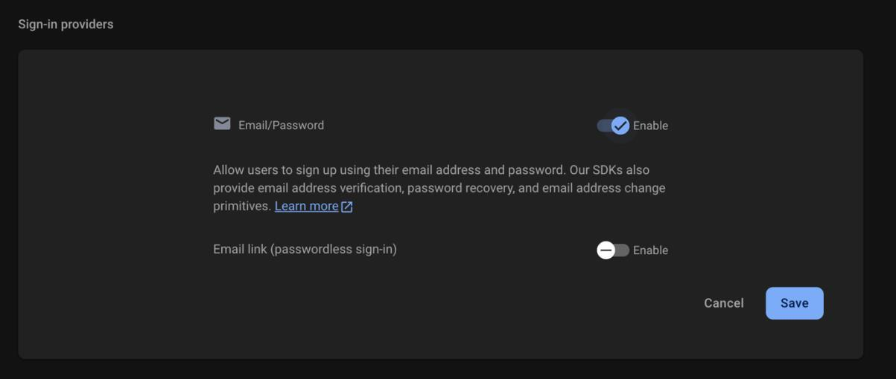
Toggle on Email/Password and save3. In the Users tab, click Add user and enter an email + password. A simple password is acceptable, but it must be remembered — it is entered into the Arduino code. After adding, the User UID is shown:
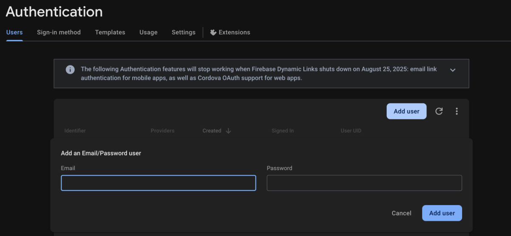
Users → Add user (email + password)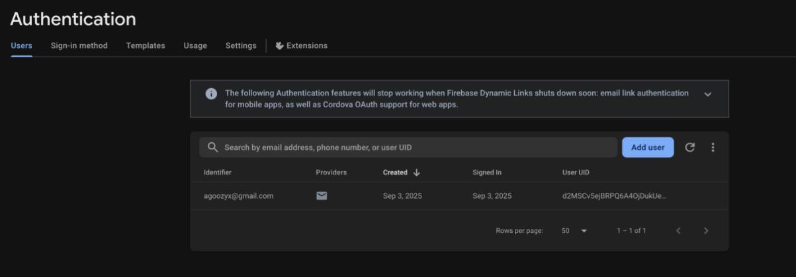
After adding the user, note the User UID4. Also toggle on the Anonymous sign-in method — it lets the smart car access the data conveniently:
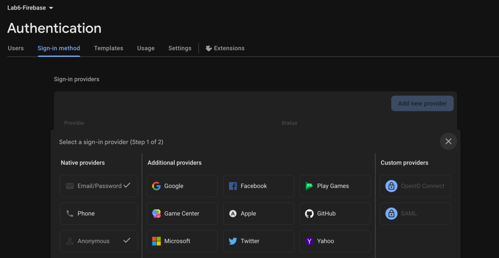
Enable the Anonymous sign-in method tooAt this point the following three items should be recorded (for example, pasted into a note file):
- Firebase Project Web API Key
- Realtime Database URL
- User ID (UID)
4. Lab Tasks
Task 1 — Reading Data from Firebase Using the ESP32
In the final project, the smart car receives information from Firebase — the start and end points, the task ID, the examination status — and makes real-time decisions based on it. This task practises reading.
Step 1. Open the file sample.json and replace <YOUR_UID> with your actual UID:
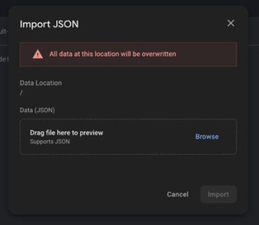
Replace<YOUR_UID> with the real UID in sample.json
This JSON format resembles the final project's format, in which each student's data is stored under their own UID to avoid conflicts and overwriting.
Step 2. Go to the Firebase Realtime Database console, click the ⋮ (three dots) at the top right corner, and select Import JSON to upload sample.json:
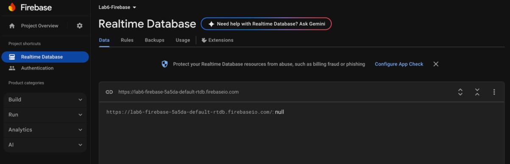
Three dots → Import JSONStep 3. Add the credentials to the code at // TODO 1:
#define API_KEY "" // ← paste the Web API Key here
#define DATABASE_URL "" // ← paste the Database URL here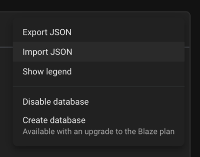
Fill in API_KEY and DATABASE_URL at TODO 1Step 4. Add the UID at // TODO 2:
String UID = ""; // ← paste the User UID here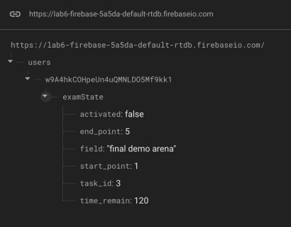
Fill in the UID at TODO 2Step 5. Enable the "Firebase Read Task" in setup(), exactly as shown:
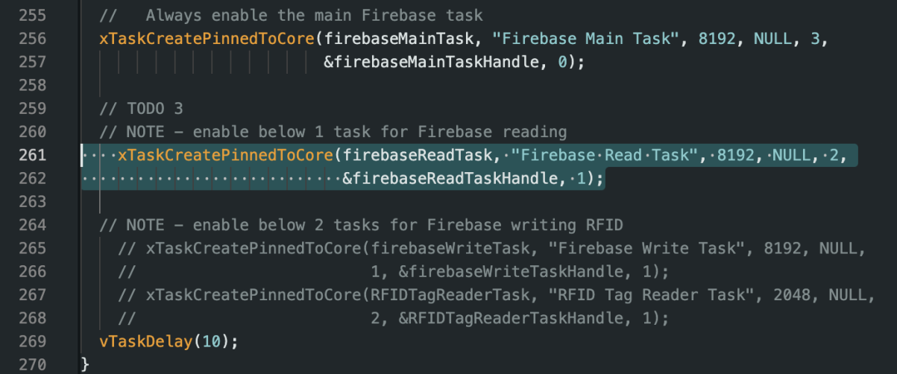
Enable the Firebase Read TaskxTaskCreatePinnedToCore(firebaseMainTask, "Firebase Main Task", 8192, NULL, 3, &firebaseMainTaskHandle, 0);
// TODO 3: enable the read task
xTaskCreatePinnedToCore(firebaseReadTask, "Firebase.Read.Task", 8192, NULL, 2, &firebaseReadTaskHandle, 1);
//xTaskCreatePinnedToCore(firebaseWriteTask, "Firebase Write Task", 8192, NULL, 1, &firebaseWriteTaskHandle, 1);
//xTaskCreatePinnedToCore(RFIDTagReaderTask, "RFID.Tag-Reader.Task", 2048, NULL, 2, &RFIDTagReaderTaskHandle, 1);
vTaskDelay(10);(This reuses the FreeRTOS xTaskCreatePinnedToCore pattern from Lab 5: one task communicates with Firebase while others operate the car. The two commented-out lines are used in Task 2.)
Step 6. Flash the code and watch the Serial Monitor: the examination-state values from the database should print. Then manually edit a value in the Firebase web console (for example, set time_remain to 100) and observe the change appear on the car within one to two seconds — real-time synchronization.
Show the serial print result of the received data to the TA / instructor.
Task 2 — Reading RFID and Writing Data to Firebase
In this task the flow is reversed: the car reads an RFID tag and writes the result up to Firebase.
(Recall §2.5: an RFID reader sends radio signals; a nearby tag replies with its stored ID. In the final project, tags along the road tell the car its current location.)
Step 1. In the code at TODO 3, comment out the read task and enable the "Firebase Write Task" and the "RFID Reader Task" instead:
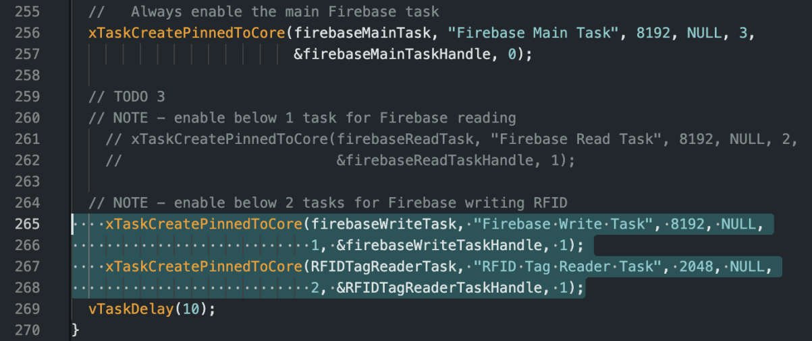
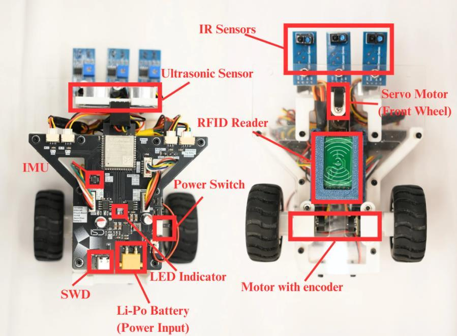
Enable the Firebase Write Task and RFID Reader Task at TODO 3 (screenshots from the manual)xTaskCreatePinnedToCore(firebaseMainTask, "Firebase Main Task", 8192, NULL, 3, &firebaseMainTaskHandle, 0);
//xTaskCreatePinnedToCore(firebaseReadTask, "Firebase.Read.Task", 8192, NULL, 2, &firebaseReadTaskHandle, 1);
xTaskCreatePinnedToCore(firebaseWriteTask, "Firebase Write Task", 8192, NULL, 1, &firebaseWriteTaskHandle, 1);
xTaskCreatePinnedToCore(RFIDTagReaderTask, "RFID.Tag-Reader.Task", 2048, NULL, 2, &RFIDTagReaderTaskHandle, 1);
vTaskDelay(10);Step 2. Place an RFID tag under the RFID reader at the bottom of the car (equivalent to tapping an Octopus card on a reader, inverted). Observe two things:
- The Serial Monitor prints the tag's value
- The tag value appears in the Firebase console — the car has uploaded it to the cloud by itself
Expected serial output:
RFID Initialized
Connecting to WiFi...
---Initializing---
Connected to WiFi network with IP Address: 192.168.110.159
RFID Tag: c3a75214
RFID_tag: "c3a75214"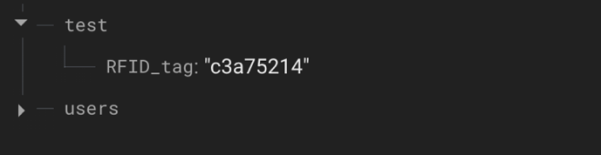
Scanning an RFID tag under the car's reader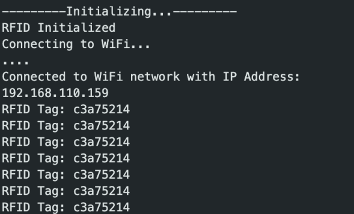
The tag value appearing in the Firebase consoleShow the RFID scanning serial output and the Firebase console result to the TA / instructor.
— End of Lab 6 —